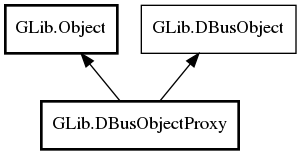

GLib.DBusObjectProxy Reference Manual
Packages
gio-2.0
GLib
DBusObjectProxy
g_connection
g_object_path
DBusObjectProxy
get_connection
DBusObjectProxy
Object Hierarchy:

Description:
public
class
DBusObjectProxy
:
Object
,
DBusObject
Namespace:
GLib
Package:
gio-2.0
Content:
Properties:
public
DBusConnection
g_connection
{
construct
set
;
owned
get
; }
public
string
g_object_path
{
construct
set
;
owned
get
; }
Creation methods:
public
DBusObjectProxy
(
DBusConnection
connection,
string
object_path)
Methods:
public
weak
DBusConnection
get_connection
()